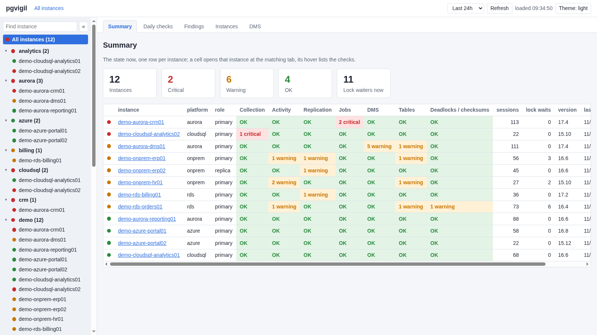
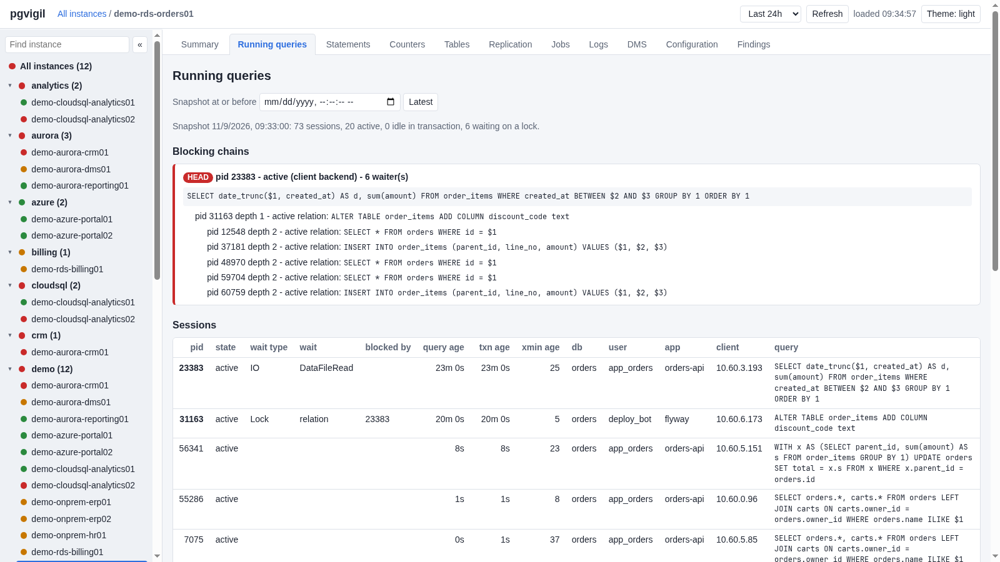
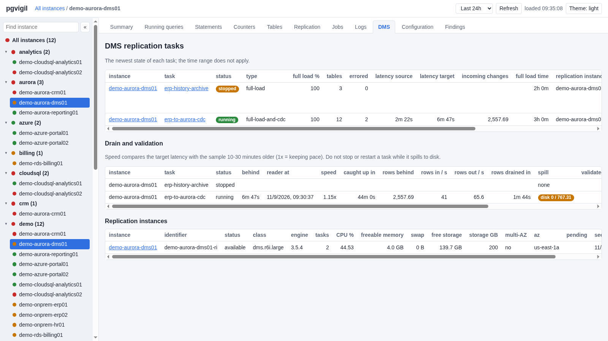

Open-source PostgreSQL monitoring, built the way a DBA works
pgvigil watches your PostgreSQL servers: the daily checks, what is running right now and who is blocking whom, the statements that cost the most, the settings that changed, the jobs that failed, the replication that fell behind. One collector binary, a PostgreSQL repository, a web UI with its own login.
Download the latest release Quick start Source on GitHub


Features
Daily checks
One overview page: stale or failing collections, replication problems, failed jobs, DMS tasks failed or stopped, CDC latency, tables in error, deadlocks and checksum failures in the last 24 hours.
Running queries and blocking chains
Every active and idle-in-transaction session, sampled each minute, with the blocking chain walked to its head. Step back through history by snapshot time.
Top statements
pg_stat_statements as deltas per interval, with reset detection, so the top statements over any window are real numbers, not cumulative totals.
Counters and rates
pg_stat_database, the background writer, checkpointer, WAL and pg_stat_io as rates over a window, charted.
Replication, slots, jobs
Streaming and logical replication, slots with retained WAL, Aurora replica status, pg_cron and pgAgent job runs and failures.
Cloud doors
On RDS and Aurora, the PostgreSQL log from CloudWatch Logs (slow statements, lock waits, deadlocks, failed logins) and AWS DMS tasks with their table statistics and CDC latency.
Every platform, one query set
On-prem PostgreSQL 13 to 18, Amazon RDS and Aurora, Azure Database for PostgreSQL, Google Cloud SQL and AlloyDB. Column names come from the server's own catalog, so one query set serves them all.
Small and static
A single static Go binary for Linux, Windows and macOS, no runtime on the target, about 30 MB of memory while polling fifty instances. The web UI is embedded in the same binary.
Open source, MIT
Built in the open on GitHub. Signed release binaries with checksums; dependencies pinned and scanned in CI.
What it collects
| Collection | Cadence | Source |
|---|---|---|
| instance | hourly | version, recovery state, non-default settings (credentials masked) with a history of changes, extensions |
| activity | 1 min | pg_stat_activity: active and idle-in-transaction sessions, blockers, pg_blocking_pids, blocking chains to the head |
| statements | 5 min | pg_stat_statements, top by time and by calls, per-interval deltas with reset detection |
| dbstats | 1 min | pg_stat_database, bgwriter, checkpointer, WAL, pg_stat_io, as rates |
| replication | 1 min | pg_stat_replication, wal receiver, slots with retained WAL, subscriptions, conflicts, aurora_replica_status() |
| databases | hourly | inventory with sizes, transaction id and multixact age |
| jobs | 1 min | pg_cron and pgAgent jobs, run history, failures |
| logs | 1 min | RDS and Aurora: the PostgreSQL log from CloudWatch Logs, slow statements, lock waits, deadlocks, failed logins |
| dms | 1 min | AWS DMS tasks, table statistics, replication instances, CDC latency and host metrics, read only |
Install
From v0.2.0, one line installs the collector as a service (the binary is fetched from the release and its checksum verified first; run it again to upgrade):
curl -fsSL https://pgvigil.com/install.sh | sh # Linux: a system account, a systemd unit
irm https://pgvigil.com/install.ps1 | iex # Windows: a service under NT SERVICE\pgvigil, elevated PowerShellNo server to point it at yet? pgvigil demo -pgbin <portable PostgreSQL bin folder> -serve runs a throwaway repository from an unzipped PostgreSQL, seeds a 12-instance fleet with 7 days of history and serves it on your own machine: no admin rights, no Docker.
By hand, on any release:
- Download the binary for your platform from the latest release and verify it against
SHA256SUMS(signed with Sigstore; the README shows the two commands). - Create a repository database on any PostgreSQL 13+ server and copy
pgvigil.example.yaml; connection strings are read from the environment or a file, never written in the config. pgvigil migrate, thenpgvigil rolesfor the three logins, thenpgvigil user add adminfor the web UI.pgvigil runfor the collector;pgvigil servefor the web UI, over HTTPS withpgvigil certor your own certificate.
pgvigil migrate -config pgvigil.yaml
pgvigil roles # CREATE ROLE statements for the collector, the UI and the monitored servers
pgvigil user add admin -config pgvigil.yaml
pgvigil run -config pgvigil.yaml
pgvigil serve -config pgvigil.yaml -listen 0.0.0.0:8443 -tls-cert pgvigil.crt -tls-key pgvigil.keyThe full quick start, the configuration reference and the platform notes are in the README. The installer scripts are deploy/install.sh and deploy/install.ps1 in the repository, served here as the same files; pgvigil install and uninstall are described in the README.
Security
- The collector connects to a monitored server as a
pg_monitorlogin, opens read-only sessions with statement and lock timeouts, and never writes to it. - Credentials never sit in the config file and are masked out of every collected text. A switch stores statement text as is, with every literal replaced, or not at all.
- The repository uses three roles: the collector may only call the import functions, the reader may only read, and the UI's password check runs through one SECURITY DEFINER function nobody else can call.
- The web UI has its own login (argon2id hashes, HttpOnly SameSite=Strict cookies, rate limits) and refuses to listen beyond loopback without TLS.
- Releases are static binaries built by GitHub Actions from a tag, with a SHA256SUMS file signed through Sigstore; modules are pinned and checked by govulncheck in CI.